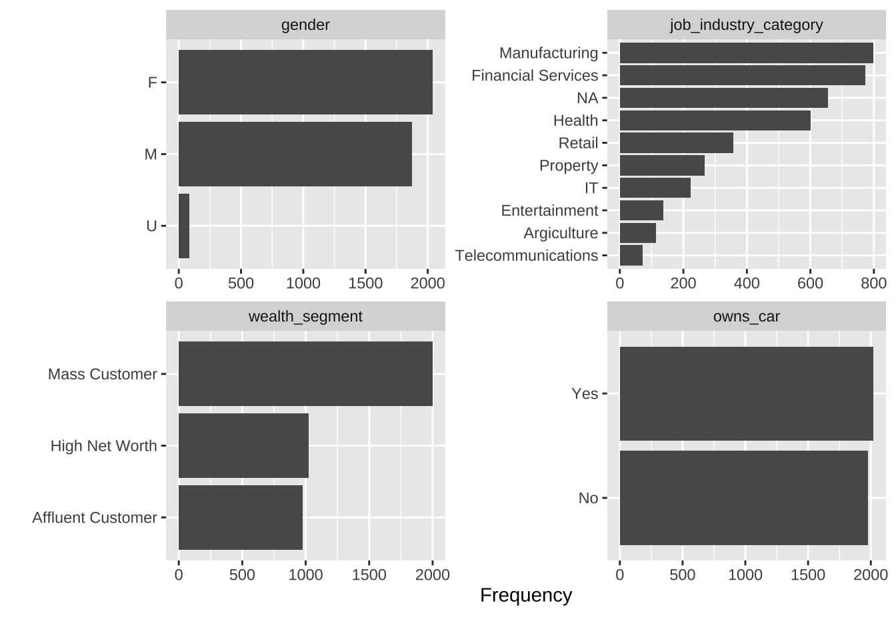
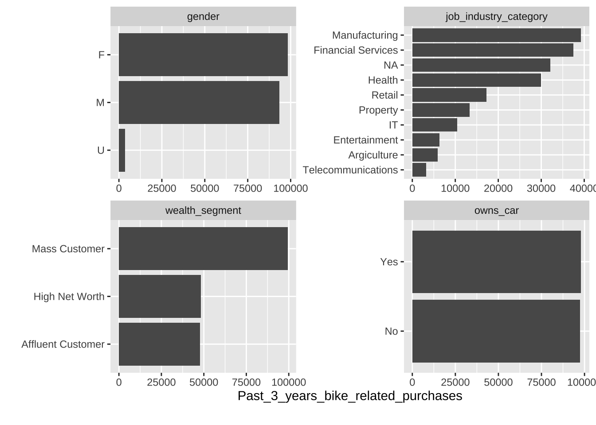
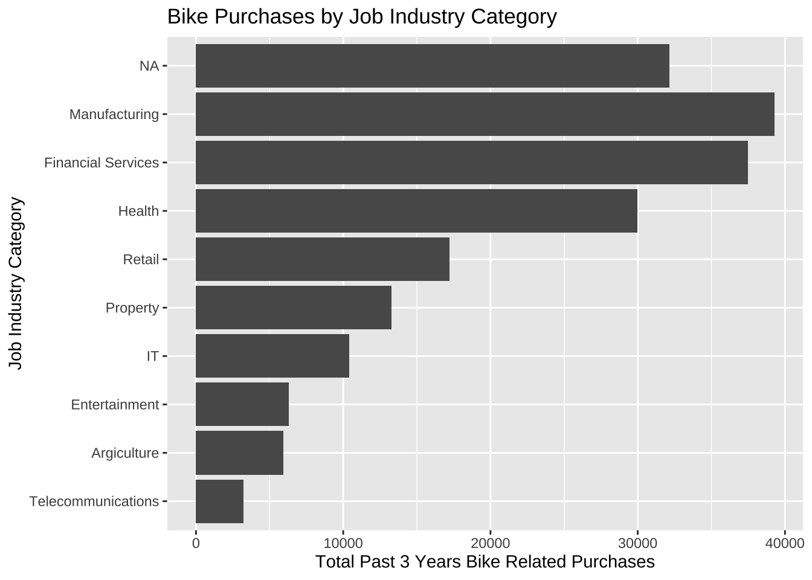
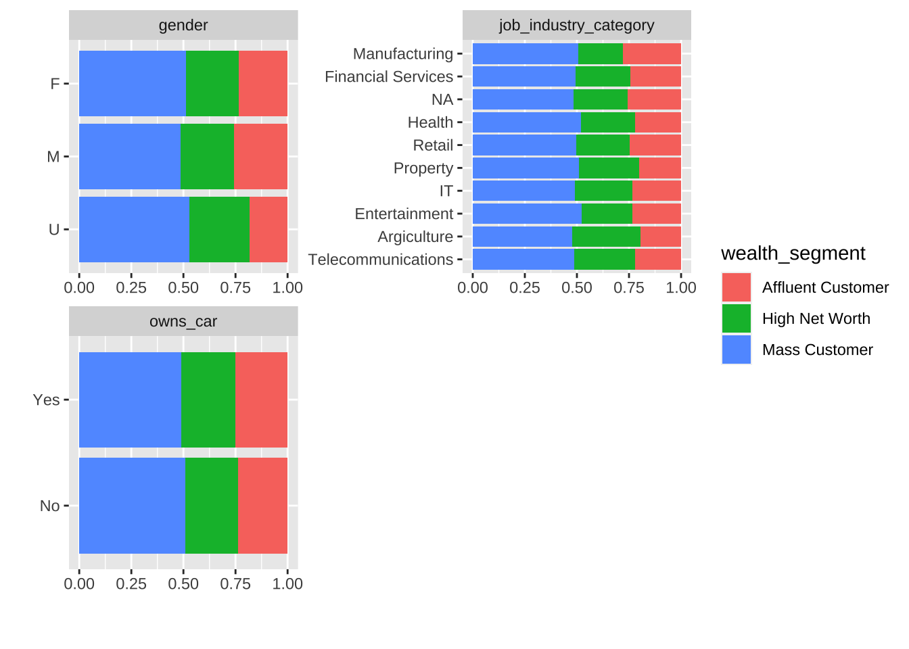
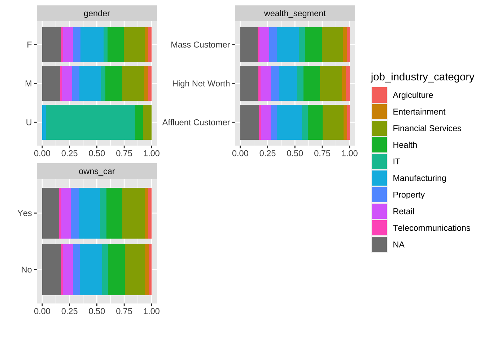

# from DataExplorer# plot factor variables based on frequency (number of customers in each category)plot_bar(CustomerDemographic, nrow =2, ncol =2)
4 columns ignored with more than 50 categories.
first_name: 3138 categories
last_name: 3723 categories
DOB: 3446 categories
job_title: 196 categories

# with indicates name of continuous feature to be summed. # default is NULL, i.e., frequency.plot_bar(CustomerDemographic, with ="past_3_years_bike_related_purchases",nrow =2, ncol =2)
4 columns ignored with more than 50 categories.
first_name: 3138 categories
last_name: 3723 categories
DOB: 3446 categories
job_title: 196 categories

Gender distribution is pretty balanced, so we will not have any gender bias in training.
Most of the customers in 2017 are in the Mass segment and work in Manufacturing, Financial Services, and Health.
This majority of the customers also have the most bike related purchases in the last 3 years.
# Assuming your data frame is called CustomerDemographicCustomerDemographic |>group_by(job_industry_category) |>summarise(total_purchases =sum(past_3_years_bike_related_purchases, na.rm =TRUE)) |>arrange(desc(total_purchases)) |>ggplot(aes(x =reorder(job_industry_category, total_purchases), y = total_purchases, by = job_industry_category)) +geom_bar(stat ="identity") +labs(title ="Bike Purchases by Job Industry Category",x ="Job Industry Category",y ="Total Past 3 Years Bike Related Purchases") +coord_flip()

plot_bar(CustomerDemographic, by ='gender', ncol =2)
4 columns ignored with more than 50 categories.
first_name: 3138 categories
last_name: 3723 categories
DOB: 3446 categories
job_title: 196 categories
Customers who did not provide their gender information appear to work mostly in IT.
A 2020 study by the AnitaB.org Institute found that women make up 28.8% of the tech workforce, a steady increase from the past few years -- 25.9% in 2018 and 26.2% in 2019.
So we will assume/expect that majority of U gender customers are Male.
# current gender distribution, before imputationtable( (CustomerDemographic |>filter(job_industry_category =="IT"))[, "gender"])
F M U
79 72 71
plot_bar(CustomerDemographic, by ='wealth_segment', ncol =2)
4 columns ignored with more than 50 categories.
first_name: 3138 categories
last_name: 3723 categories
DOB: 3446 categories
job_title: 196 categories

plot_bar(CustomerDemographic, by ='job_industry_category', ncol =2)
4 columns ignored with more than 50 categories.
first_name: 3138 categories
last_name: 3723 categories
DOB: 3446 categories
job_title: 196 categories

Impute data
gender
Since first names often indicate gender, it should be possible to predict gender using names.
We will impute gender (or more precisely, sex assigned at birth) based on first names using historical data.
The R package gender uses historical datasets from the U.S. Social Security Administration, the U.S. Census Bureau (via IPUMS USA), and the North Atlantic Population Project to provide predictions of gender for first names for particular countries and time periods.
# one limitation of using gender package instead of genderize is# the ability to specify country = 'AU'# The "genderize" method uses the Genderize.io <https://genderize.io/> API, # which is based on "user profiles across major social networks."imputedUCustomers <-gender(Customer_U_gender$first_name, method ="genderize")imputedUCustomers
# A tibble: 87 × 4
name gender proportion_male proportion_female
<chr> <chr> <dbl> <dbl>
1 Jory male 0.6 0.4
2 Reggie male 0.94 0.0600
3 Edgar male 1 0
4 Giorgio male 1 0
5 Marlow male 0.94 0.0600
6 Cornelius male 1 0
7 Eugenie female 0.0100 0.99
8 Darelle female 0.26 0.74
9 Kienan male 0.99 0.0100
10 Ardelle female 0 1
# ℹ 77 more rows
check for missing values where gender() couldn’t impute.
sum(is.na(imputedUCustomers$gender))
[1] 3
imputedUCustomers |>filter(is.na(gender) ==TRUE)
# A tibble: 3 × 4
name gender proportion_male proportion_female
<chr> <chr> <dbl> <dbl>
1 Goldarina <NA> NA NA
2 Devland <NA> NA NA
3 Sutherlan <NA> NA NA
Manual imputation of these three names (source: thebump.com)
imputedUCustomers <- imputedUCustomers |>mutate(gender =case_when( name =="Goldarina"~"F", name =="Devland"~"M", name =="Sutherlan"~"M",TRUE~as.character(gender) ))
# A tibble: 87 × 4
name gender proportion_male proportion_female
<chr> <chr> <dbl> <dbl>
1 Jory M 0.6 0.4
2 Reggie M 0.94 0.0600
3 Edgar M 1 0
4 Giorgio M 1 0
5 Marlow M 0.94 0.0600
6 Cornelius M 1 0
7 Eugenie F 0.0100 0.99
8 Darelle F 0.26 0.74
9 Kienan M 0.99 0.0100
10 Ardelle F 0 1
# ℹ 77 more rows
apply imputed gender values to original CustomerDemographic dataset.
imputedU_CD <- CustomerDemographic |>left_join(imputedUCustomers, by =c("first_name"="name")) |># uses mutate and ifelse to update the "gender" column # based on the values in the "gender.x" and "gender.y" columns.mutate(gender =ifelse(gender.x =="U", gender.y, gender.x)) |>select(-starts_with("gender."))# Now, 'imputedU_CD' contains the updated/imputed 'gender' column
imputedU_CD should have same number of rows as CustomerDemographic, ie. 3997.
Check if majority of imputed U customers are Male.
table(imputedUCustomers$gender)
F M
43 44
Turns out our hypothesis that there are more IT male customers is wrong.
customer_id first_name last_name gender
1 144 Jory Barrabeale U
2 168 Reggie Broggetti U
3 267 Edgar Buckler U
4 290 Giorgio Kevane U
5 451 Marlow Flowerdew U
6 453 Cornelius Yarmouth U
7 454 Eugenie Domenc U
8 480 Darelle Ive U
9 513 Kienan Soar U
10 526 Ardelle <NA> U
11 548 Georgie Cudbertson U
12 582 Rhoda McKeown U
13 599 Ernestus Cruden U
14 680 Gay Pickersgill U
15 685 Booth Birkin U
16 799 Harland Spilisy U
17 839 Charis Greaves U
18 883 Lolita Bennie U
19 892 Conroy Healy U
20 950 Bret Ivakhnov U
21 975 Goldarina Rzehorz U
22 983 Shaylyn Riggs U
23 996 Aura Bemlott U
24 1038 Fraser Acome U
25 1044 Frederico Whilder U
26 1082 Guinevere Kelby U
27 1174 Shellysheldon Gooderridge U
28 1210 Shandie Sprigg U
29 1244 Glenn Tinham U
30 1351 Lorettalorna <NA> U
31 1477 Leo Balharry U
32 1509 Sibley Janek U
33 1583 Krysta O' Reagan U
34 1628 Hermione Brereton U
35 1683 Brenn Bacon U
36 1740 Faythe Janaszewski U
37 1773 Nickolas Guittet U
38 1780 Maude Tixier U
39 1806 Gil De Gregorio U
40 1918 Devin Sandeson U
41 1938 Austin Toopin U
42 1990 Mira Askham U
43 2000 Kain Rene U
44 2021 Ulrica Abelwhite U
45 2069 Sol Holdron U
46 2165 Marlie Teesdale U
47 2205 Birk Elphey U
48 2252 Darcey Annis U
49 2295 Farris Hazelby U
50 2335 Payton Sheach U
51 2341 Caterina Scedall U
52 2414 Basile Bowlas U
53 2426 Yancy Ovett U
54 2469 Kermie Hedger U
55 2540 Donavon <NA> U
56 2642 Arabelle Rentelll U
57 2647 Marcelia Blannin U
58 2696 Isabelle Bursnoll U
59 2697 Klarika Yerby U
60 2854 Vikky Dyde U
61 2920 Casar Ritchley U
62 2963 Christin Fricke U
63 2999 Rinaldo Diggin U
64 3012 Devland Probart U
65 3086 Pieter Gadesby U
66 3151 Thorn Choffin U
67 3222 Caralie Sellors U
68 3223 Tiffi Wortt U
69 3255 Sutherlan Truin U
70 3288 Fair Dewen U
71 3298 Christine Baignard U
72 3312 Franky Nanninini U
73 3322 Hew Sworder U
74 3343 Cristabel Bim U
75 3365 Karlens Chaffyn U
76 3473 Sanderson Alloway U
77 3510 Jemima Izaac U
78 3513 Enriqueta Waterhowse U
79 3565 Charyl Pottiphar U
80 3654 Kenyon Paddefield U
81 3718 Damiano <NA> U
82 3727 Eba Youle U
83 3779 Ulick Daspar U
84 3883 Nissa Conrad U
85 3931 Kylie Epine U
86 3935 Teodor Alfonsini U
87 3998 Sarene Woolley U
past_3_years_bike_related_purchases DOB
1 71 <NA>
2 8 <NA>
3 53 <NA>
4 42 <NA>
5 37 <NA>
6 81 <NA>
7 58 <NA>
8 67 <NA>
9 30 <NA>
10 9 <NA>
11 84 <NA>
12 21 <NA>
13 48 <NA>
14 22 <NA>
15 28 <NA>
16 39 <NA>
17 14 <NA>
18 73 <NA>
19 22 <NA>
20 24 <NA>
21 26 <NA>
22 49 <NA>
23 67 <NA>
24 57 <NA>
25 4 <NA>
26 90 <NA>
27 9 <NA>
28 81 <NA>
29 80 <NA>
30 32 <NA>
31 42 <NA>
32 10 <NA>
33 18 <NA>
34 13 <NA>
35 72 <NA>
36 83 <NA>
37 82 <NA>
38 52 <NA>
39 95 <NA>
40 83 <NA>
41 47 <NA>
42 9 <NA>
43 68 <NA>
44 31 <NA>
45 32 <NA>
46 16 <NA>
47 76 <NA>
48 31 <NA>
49 35 <NA>
50 42 <NA>
51 41 <NA>
52 18 <NA>
53 64 <NA>
54 18 <NA>
55 14 <NA>
56 36 <NA>
57 1 <NA>
58 42 <NA>
59 70 <NA>
60 49 <NA>
61 0 <NA>
62 17 <NA>
63 28 <NA>
64 81 <NA>
65 18 <NA>
66 20 <NA>
67 40 <NA>
68 44 <NA>
69 47 <NA>
70 47 <NA>
71 1 <NA>
72 49 <NA>
73 24 <NA>
74 3 <NA>
75 29 <NA>
76 34 <NA>
77 48 <NA>
78 80 <NA>
79 14 <NA>
80 78 <NA>
81 22 <NA>
82 65 <NA>
83 68 <NA>
84 35 <NA>
85 19 <NA>
86 72 <NA>
87 60 <NA>
job_title job_industry_category wealth_segment
1 Environmental Tech IT Mass Customer
2 General Manager IT Affluent Customer
3 <NA> IT High Net Worth
4 Senior Sales Associate IT Mass Customer
5 Quality Control Specialist IT High Net Worth
6 Assistant Professor IT High Net Worth
7 Research Nurse Health Affluent Customer
8 Registered Nurse Health Mass Customer
9 Tax Accountant IT Mass Customer
10 Social Worker Health Mass Customer
11 <NA> IT High Net Worth
12 Staff Scientist IT Affluent Customer
13 Senior Financial Analyst Financial Services Mass Customer
14 <NA> IT High Net Worth
15 Senior Developer IT Mass Customer
16 Programmer I IT Mass Customer
17 Structural Analysis Engineer IT Mass Customer
18 Recruiter IT Mass Customer
19 Office Assistant II IT Mass Customer
20 Recruiter IT High Net Worth
21 Automation Specialist IV IT Mass Customer
22 <NA> IT Affluent Customer
23 Assistant Manager IT Mass Customer
24 Engineer I Manufacturing Mass Customer
25 Food Chemist Health High Net Worth
26 Financial Analyst Financial Services Mass Customer
27 Executive Secretary IT Mass Customer
28 Programmer II IT Mass Customer
29 Financial Analyst Financial Services Mass Customer
30 Office Assistant IV IT High Net Worth
31 Actuary Financial Services Mass Customer
32 Computer Systems Analyst I IT High Net Worth
33 Geologist IV IT Mass Customer
34 Assistant Manager IT Mass Customer
35 Budget/Accounting Analyst I IT Mass Customer
36 Research Associate IT Mass Customer
37 <NA> IT Mass Customer
38 Research Associate IT Mass Customer
39 Software Test Engineer IV IT Mass Customer
40 Staff Accountant II IT Affluent Customer
41 Automation Specialist IV IT Mass Customer
42 Senior Financial Analyst Financial Services High Net Worth
43 Assistant Professor IT High Net Worth
44 Software Test Engineer I IT High Net Worth
45 Software Test Engineer IV IT Mass Customer
46 Civil Engineer Manufacturing Affluent Customer
47 Accounting Assistant III IT Mass Customer
48 Teacher IT High Net Worth
49 Internal Auditor IT Mass Customer
50 Account Executive IT Mass Customer
51 Web Designer II IT Mass Customer
52 Registered Nurse Health Mass Customer
53 <NA> IT Affluent Customer
54 Accounting Assistant II IT Mass Customer
55 Executive Secretary IT Mass Customer
56 VP Accounting Financial Services High Net Worth
57 Physical Therapy Assistant IT High Net Worth
58 Social Worker Health Mass Customer
59 Legal Assistant IT High Net Worth
60 Project Manager IT High Net Worth
61 Business Systems Development Analyst IT Mass Customer
62 Safety Technician II IT Affluent Customer
63 Business Systems Development Analyst IT Affluent Customer
64 Technical Writer IT Mass Customer
65 Biostatistician I IT High Net Worth
66 Senior Developer IT Affluent Customer
67 Senior Editor IT Affluent Customer
68 Database Administrator III IT Mass Customer
69 Engineer IV IT High Net Worth
70 Engineer III IT High Net Worth
71 VP Quality Control IT Affluent Customer
72 Administrative Officer IT High Net Worth
73 Financial Analyst Financial Services Affluent Customer
74 Recruiter IT Mass Customer
75 Engineer III IT Mass Customer
76 Analog Circuit Design manager IT Mass Customer
77 Safety Technician II IT Affluent Customer
78 Internal Auditor IT Affluent Customer
79 Structural Engineer IT High Net Worth
80 Electrical Engineer Manufacturing Mass Customer
81 Geologist IV IT Mass Customer
82 Assistant Professor IT Mass Customer
83 <NA> IT Affluent Customer
84 Legal Assistant IT Mass Customer
85 <NA> IT High Net Worth
86 <NA> IT High Net Worth
87 Assistant Manager IT High Net Worth
owns_car tenure
1 No NA
2 Yes NA
3 No NA
4 No NA
5 No NA
6 No NA
7 Yes NA
8 Yes NA
9 No NA
10 Yes NA
11 Yes NA
12 No NA
13 Yes NA
14 Yes NA
15 No NA
16 Yes NA
17 Yes NA
18 Yes NA
19 Yes NA
20 Yes NA
21 No NA
22 No NA
23 Yes NA
24 Yes NA
25 No NA
26 Yes NA
27 No NA
28 No NA
29 Yes NA
30 No NA
31 Yes NA
32 Yes NA
33 Yes NA
34 No NA
35 Yes NA
36 Yes NA
37 Yes NA
38 No NA
39 No NA
40 No NA
41 Yes NA
42 No NA
43 Yes NA
44 Yes NA
45 Yes NA
46 No NA
47 No NA
48 Yes NA
49 Yes NA
50 No NA
51 Yes NA
52 Yes NA
53 Yes NA
54 Yes NA
55 Yes NA
56 No NA
57 No NA
58 Yes NA
59 No NA
60 Yes NA
61 Yes NA
62 Yes NA
63 Yes NA
64 Yes NA
65 No NA
66 Yes NA
67 No NA
68 Yes NA
69 No NA
70 No NA
71 Yes NA
72 No NA
73 Yes NA
74 Yes NA
75 No NA
76 No NA
77 Yes NA
78 Yes NA
79 Yes NA
80 No NA
81 Yes NA
82 No NA
83 No NA
84 No NA
85 Yes NA
86 Yes NA
87 No NA
customer_id first_name last_name gender
Min. : 144.0 Length:87 Length:87 Length:87
1st Qu.: 989.5 Class :character Class :character Class :character
Median :2021.0 Mode :character Mode :character Mode :character
Mean :2053.3
3rd Qu.:3118.5
Max. :3998.0
past_3_years_bike_related_purchases DOB job_title
Min. : 0.00 Length:87 Length:87
1st Qu.:20.50 Class :character Class :character
Median :40.00 Mode :character Mode :character
Mean :42.06
3rd Qu.:66.00
Max. :95.00
job_industry_category wealth_segment owns_car tenure
Length:87 Length:87 Length:87 Min. : NA
Class :character Class :character Class :character 1st Qu.: NA
Mode :character Mode :character Mode :character Median : NA
Mean :NaN
3rd Qu.: NA
Max. : NA
NA's :87
U gender customers also don’t have info on DOB and tenure